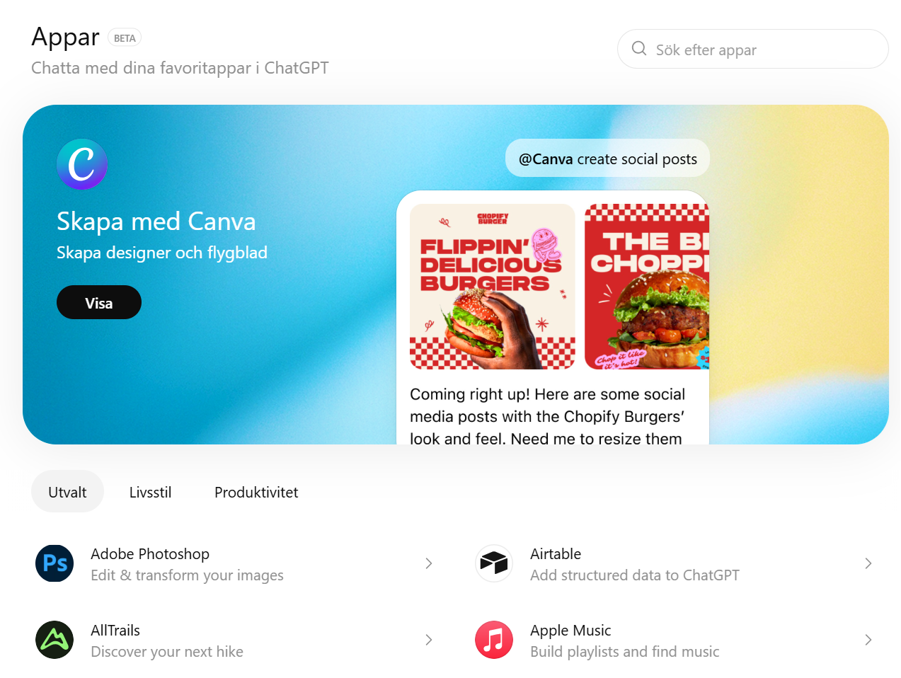

Lär dig ChatGPT-ekosystemet gratis och ligga före
90 % av alla AI-användare.
Appar och Atlas är två viktiga komponenterna i ChatGPT-ekosystemet
Appar gör att AI inte längre är isolerad i en chatt. Genom att koppla ChatGPT till externa system som Google Drive, databaser eller CRM kan AI arbeta direkt i din verksamhet – hämta information, uppdatera data och bli en aktiv del av dina processer. Det innebär att AI går från att bara ge svar till att faktiskt utföra arbete.
Atlas löser ett kritiskt problemet: att AI “glömmer”. Med Atlas får du ett strukturerat minneslager där dokument, projekt, analyser och tidigare arbete sparas och organiseras. Det gör att AI kan bygga vidare på tidigare kunskap, hålla kontext över tid och arbeta med komplexa projekt utan att tappa tråden.

Under utveckling
Utvecklingen av multimedia inom AI – inklusive bild- och videogenerering – markerar ett fundamentalt skifte i hur artificiell intelligens används i kunskapsarbete. AI är inte längre begränsad till textbaserade svar, utan har utvecklats till ett multimodalt system som kan skapa, förstå och kombinera flera typer av innehåll: text, bild, video och ljud. Detta innebär att AI går från att vara ett analysverktyg till att bli ett komplett produktionssystem..
Det kommer korta kurser om hur vi kan använda AI för att skapa bild och video. Men det är INTE ChatGPT baserat, dvs. det ingår inte i ChatGPT Mastery Program. Varför? När det gäller Multimedia kan man inte låsa sig till en enda plattform. Utvekligen inom detta område går otroligt fort och det dyker upp nya verktyg hela tiden.
Under utveckling
Vi går just nu igenom ett paradigmskifte. Det som tidigare krävde team av utvecklare, månader av arbete och djup teknisk kompetens — kan idag byggas av en person, på dagar, utan att skriva kod.
Detta kallas Vibe Coding I stället för att programmera beskriver du vad du vill bygga — och AI:n skapar det åt dig. Du går från att skriva kod → till att styra system.
Detta har möjliggjort en ny generation verktyg som: Lovable och Split, plattformar som låter dig gå från idé → till fungerande produkt på minuter.
Men som en No-Code Engineer går vi stt steg längre, till nästa nivå, med plattformar som Cursor, Claude Code, Antigravity ellr Codex. I denna utbildning fokuserar vi på Codex från OpenAI, eftersom det integrerar perfekt med hela ChatGPT Mastery Program.
OpenAI har nu transformerat Codex till en agentisk IDE (verktyg för att utveckla appar). Detta innebär:
Codex är inte längre ett verktyg. Det är en byggmaskin.
I denna utbildning arbetar vi med två nivåer av No-Code Engineering:
Level 1: Lovable: För snabb prototyping och idévalidering. Lovable låter dig generera applikationer direkt från text. Det är optimalt för att testa idéer och snabbt skapa MVP:er
Level 2: OpenAI Codex: För systemdesign, skalbarhet och produktisering. Codex fungerar som en agentisk utvecklingsmiljö där du kan:
Du få välja vilken nivå passar dig bäst.
👉 Den som lär sig detta nu kommer bygga framtidens företag
👉 Den som inte gör det… kommer använda andras